Week 09 - Input Devices#
Week 9 focused on input devices, learning to interface sensors with microcontrollers and read data from the physical world.
The aim was to understand different sensor types, signal conditioning, and data acquisition.
This week explored how embedded systems sense and respond to their environment.
Group Assignment#
- Probe an input device’s analog levels and digital signals
Individual Assignment#
- Measure something: Add a sensor to a microcontroller board that you have designed and read it
Extra Credit Goals
- Try multiple sensor types
- Implement signal processing or filtering
What I Learned#
- How to select and spec sensors based on electrical constraints — the RCWL-0516’s 4 V minimum supply forced me to think about power domains and level shifting properly
- The difference between analog and digital sensor outputs at the signal level, not just in theory — seeing them on an oscilloscope made the distinction concrete
- How to share multiple I²C devices on a single bus, manage addresses, and use interrupt lines so the MCU doesn’t have to poll
- Why a minimal microcontroller like the ATtiny1624 is a better learning tool for this week than a feature-rich platform — it exposes the real constraints (pull-ups, bus loading, voltage compatibility) instead of hiding them
- How to split a design across two boards to keep sensor breakouts swappable independently of the MCU board
- KiCad PCB layout for mixed-signal boards — routing I²C traces with adequate clearances and placing decoupling caps close to power pins
Software Used#
- Arduino IDE or other development environment
- Oscilloscope for signal analysis
- Serial monitor for data visualization
- Browser + Git for documentation
Weekly Schedule#
| Day | What I Did |
|---|---|
| WED | Lecture on input devices |
| THU | Group Assignment |
| FRI | Individual Assignment - Finding Sensors for the Project |
| SAT | SAMD-21 Board Design |
| SUN | Attiny Board Design |
| MON | Sensor Board Design |
| TUE | Regional review |
Group Assignment#
Objective#
Use multiple sensors and visualise their output signals using an oscilloscope. The goal was to observe both digital and analog signals and compare their amplitude/logic-level characteristics.
Sensors Tested#
We tested a range of sensors available in the lab, including a rotary encoder and several other input modules. Each was wired up to the oscilloscope probes and signals were captured in real time.
Observations#
- Rotary encoder — produced a clean quadrature digital signal (two square wave signals called Channel A and Channel B, that are 90° out of phase with each other.). The logic levels toggled between 0 V and the supply voltage . Direction of rotation was readable from the phase relationship between the two channels.
- Analog sensors — produced continuously varying voltage curves. Amplitude varied with the physical stimulus .
- Digital sensors — produced discrete HIGH/LOW transitions.
- We compared signals at different supply voltages (3.3 V vs 5 V logic) and noted how the logic HIGH threshold shifted accordingly.
The oscilloscope exercise gave a concrete feel for signal integrity, noise floors, and the difference between a “clean” digital edge and a slow analog ramp.
Individual Assignment#
First Attempt — SAMD21 Dev Board#
My first plan for this week was to design a custom SAMD21-based development board — a more capable platform that I could also reuse for my final project sensors. I went through the full design process: researched the chip, drew up the schematic, routed the PCB, and got a 3D model I was happy with.
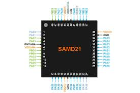
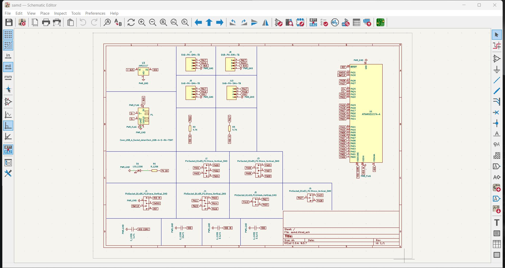
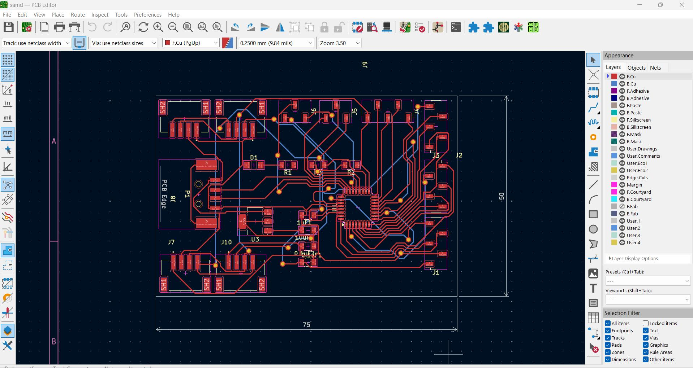
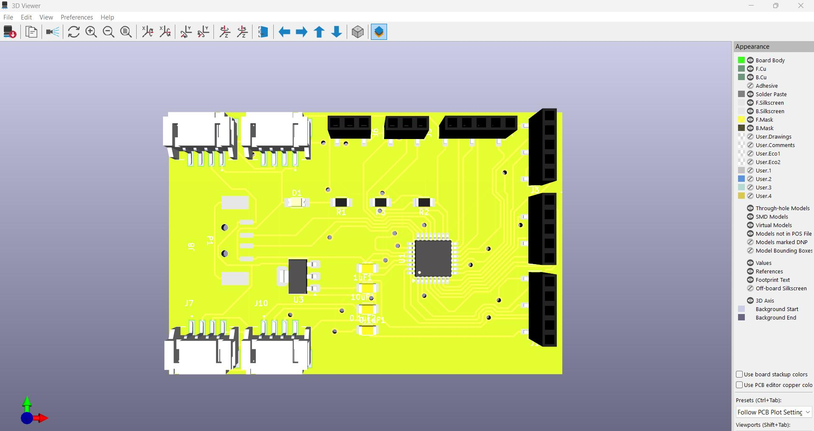
Bill of Materials:
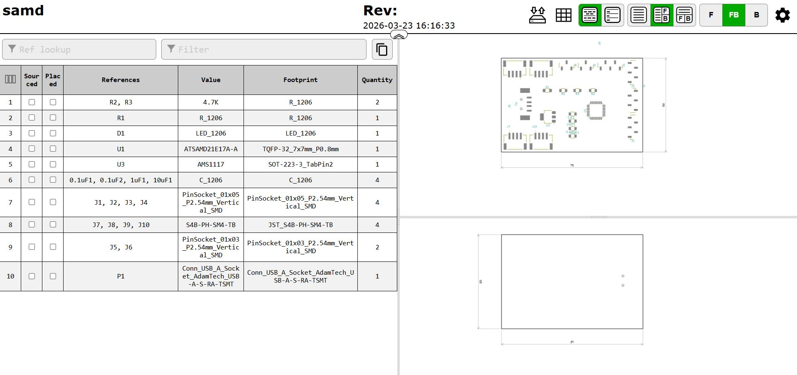
Gerber Visualization:
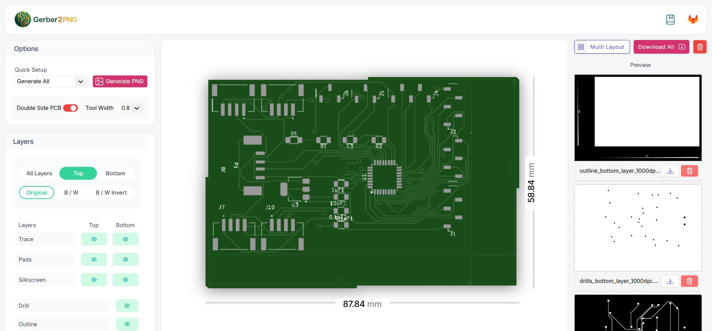
After completing the board design, I had a discussion with my instructor Saheen. He pointed out that this week’s intent wasn’t about designing a powerful platform — it was about learning to work directly with sensors and input peripherals using a minimal microcontroller. The exercise is about doing embedded systems without the safety net of a feature-rich platform like the XIAO ESP32C6. The SAMD21 design, while complete, was overkill for what Week 9 is actually teaching.
So I scrapped it and started fresh with the ATtiny1624.
Microcontroller — ATtiny1624#
Switched to the ATtiny1624 — a small, cheap, capable AVR microcontroller from Microchip.
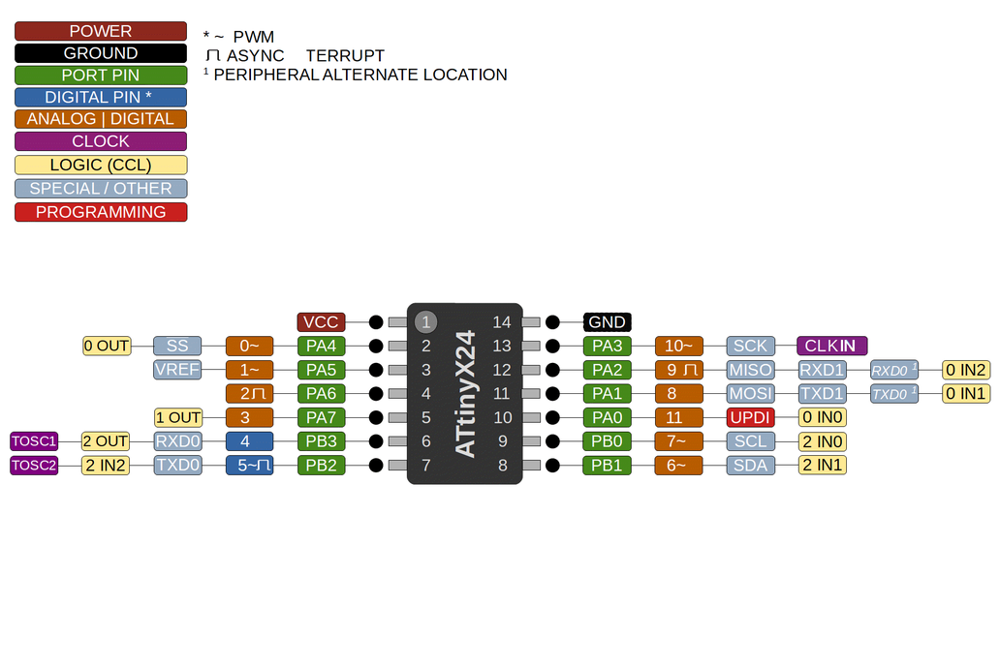
| Parameter | Value |
|---|---|
| Architecture | AVR (8-bit) |
| Flash | 16 KB |
| SRAM | 2 KB |
| EEPROM | 256 B |
| I/O Pins | 18 |
| ADC | 12-channel, 10-bit |
| Communication | USART, SPI, TWI (I²C) |
| Operating Voltage | 1.8 – 5.5 V |
| Package | SOIC-14 / VQFN-20 |
| Programming | UPDI |
The ATtiny1624 hits the sweet spot: small enough to be genuinely constrained, but rich enough in peripherals (hardware I²C, hardware SPI, multiple ADC channels) to interface with real sensors without bit-banging everything.
Sensors Selected#
All three sensors are used as breakout modules (pre-assembled PCBs with the IC, decoupling caps, pull-up resistors, and level shifting already onboard where needed). This is noted where relevant.
1. RCWL-0516 — Microwave Motion Sensor#
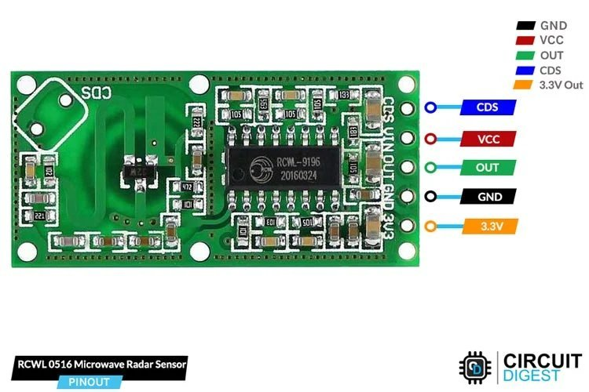
| Parameter | Value |
|---|---|
| Detection method | Doppler radar (3.18 GHz microwave) |
| Supply voltage | 4 – 28 V (onboard regulator) |
| Output voltage | 3.3 V logic (HIGH on motion) |
| Output type | Digital (active HIGH) |
| Detection range | ~5–7 m (configurable) |
| Module pins | VIN, GND, OUT, CDS (light sensor pad), VREG (3.3 V out) |
Pin description (module):
| Pin | Function |
|---|---|
| VIN | Power input — 4 V to 28 V |
| GND | Ground |
| OUT | Digital output — HIGH (~3.3 V) when motion detected |
| CDS | Pad for optional LDR (disable in daylight) |
| 3V3 | 3.3 V regulated output (usable as logic reference) |
⚠️ Level shift note: VIN needs at least 4 V, which means it cannot run directly off a 3.3 V rail. A separate 5 V supply is fed to VIN. The OUT pin is already 3.3 V logic, so it is safe for the ATtiny1624’s GPIO. However, since all sensor data lines are on a shared 3.3 V I²C bus, a logic level shifter is placed between the RCWL OUT line and the ATtiny to keep the power domains cleanly separated and to protect the microcontroller from any transient spikes from the higher-voltage domain.
2. APDS-9960 — Gesture / Proximity / Color / ALS Sensor#
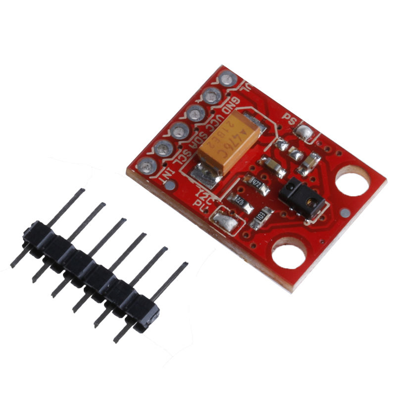
| Parameter | Value |
|---|---|
| Manufacturer | Broadcom (via SparkFun / similar breakout) |
| Interface | I²C (address: 0x39) |
| Supply voltage | 3.3 V |
| Logic level | 3.3 V |
| Gestures detected | UP, DOWN, LEFT, RIGHT, FAR, NEAR |
| Additional modes | Proximity (0–255), RGBC color, Ambient Light |
| Module pins | VCC, GND, SDA, SCL, INT |
Pin description (module):
| Pin | Function |
|---|---|
| VCC | 3.3 V |
| GND | Ground |
| SDA | I²C data |
| SCL | I²C clock |
| INT | Active-LOW interrupt (fires on gesture/proximity event) |
The APDS-9960 communicates over I²C. The INT pin pulls low when an event is ready — this is wired to an interrupt-capable GPIO on the ATtiny1624 so the MCU doesn’t have to poll.
3. VL53L0X — Time-of-Flight Distance Sensor#
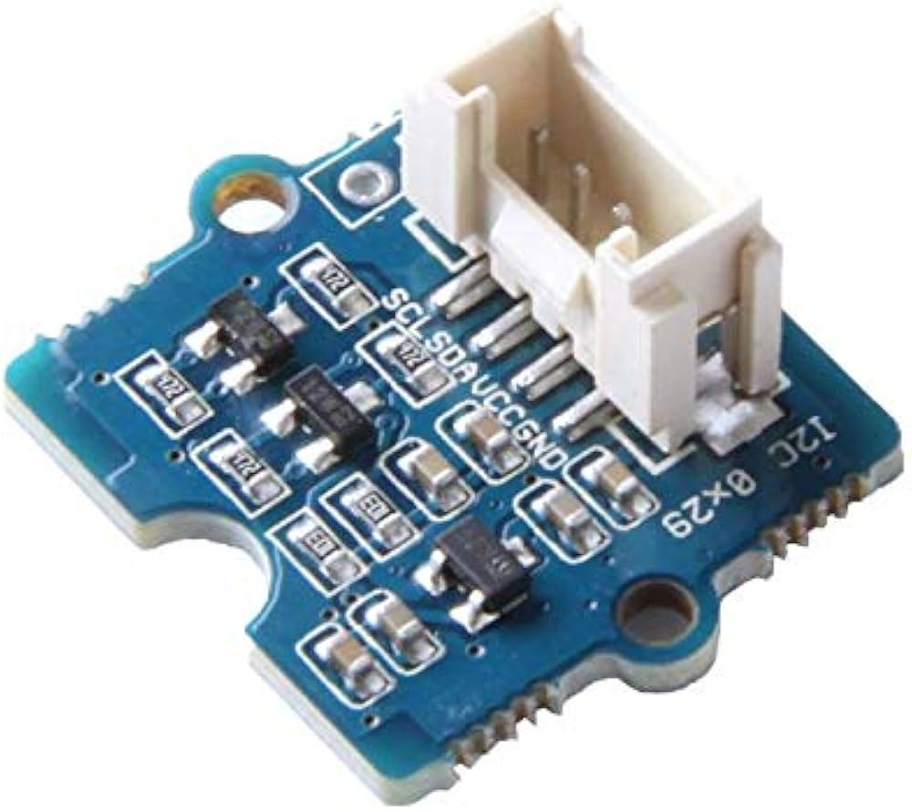
| Parameter | Value |
|---|---|
| Manufacturer | STMicroelectronics |
| Interface | I²C (default address: 0x29, up to 400 kHz FAST mode) |
| Supply voltage | 3.3 V / 5 V (module has onboard 2.8 V LDO) |
| Operating voltage | 3.3 V / 5 V |
| Operating temperature | −20 ℃ – 70 ℃ |
| Logic level | 3.3 V |
| Infrared emitter | 940 nm laser |
| Ranging mode | Single / continuous / timed |
| Recommended measure distance | 30 mm – 1000 mm |
| Max range | ~2 m (ambient dependent) |
| Resolution | 1 mm |
| Module pins | VCC, GND, SDA, SCL, XSHUT, GPIO1 |
Pin description (module):
| Pin | Function |
|---|---|
| VCC | 2.6 V – 5 V (onboard LDO handles regulation) |
| GND | Ground |
| SDA | I²C data |
| SCL | I²C clock |
| XSHUT | Active-LOW shutdown / hardware reset. Pull LOW to disable the device (useful for address remapping when multiple VL53L0X devices are on the same bus) |
| GPIO1 | Interrupt output — signals data ready or threshold events |
The VL53L0X uses 940 nm invisible laser pulses and measures the time for photons to return. It works on I²C and shares the bus with the APDS-9960. Since both sensors power up to the same default I²C address (VL53L0X = 0x29, APDS = 0x39 — these are actually different, so no conflict here), no address remapping is needed for this setup.
Reference: Seeed Studio — Grove Time of Flight Distance Sensor VL53L0X
Board Design — Split into Two PCBs#
The design was split across two boards for cleanliness:
Board 1 — Sensor Board
- Connectors/pads for RCWL-0516 module
- Connectors/pads for APDS-9960 module
- Connectors/pads for VL53L0X module
- BSS138 logic level shifter for RCWL OUT line
- I²C pull-up resistors (4.7 kΩ on SDA and SCL)
- Decoupling capacitors on power rails
Board 2 — ATtiny1624 Board
- ATtiny1624 in SOIC-14 package
- UPDI programming header (1x3: UPDI, VCC, GND)
- 100 nF + 10 µF decoupling on VCC
- 3.3 V power input
- I²C bus connector (SDA, SCL, VCC, GND)
- GPIO connector for RCWL digital output
- Status LED + current-limiting resistor
Both boards were designed in KiCad, then fabricated using the lab’s PCB milling process.
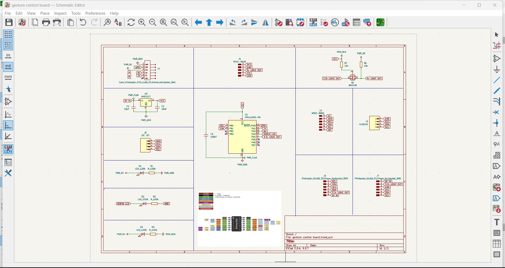
Board 1 — Sensor Board (KiCad)#
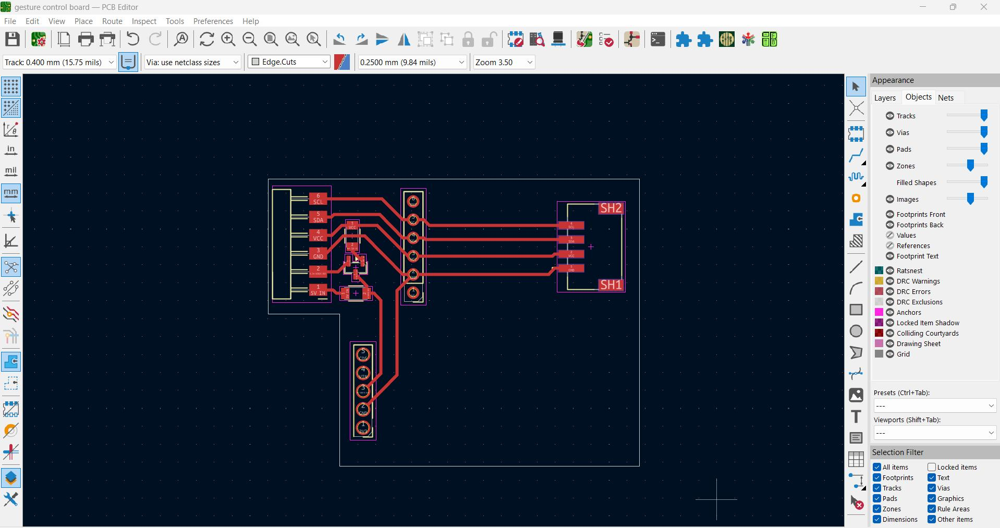
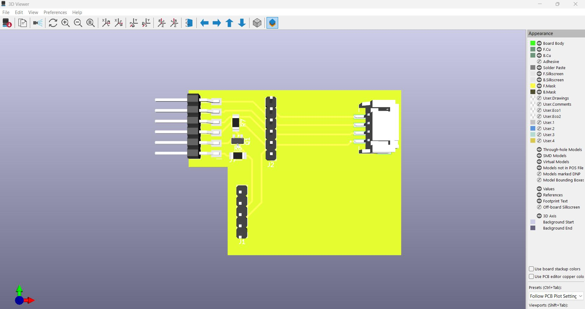
Board 2 — ATtiny1624 Board (KiCad)#
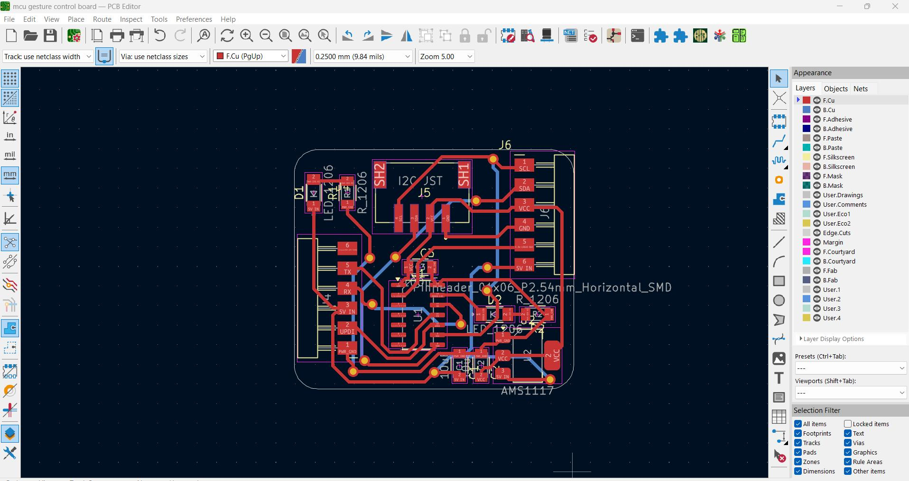
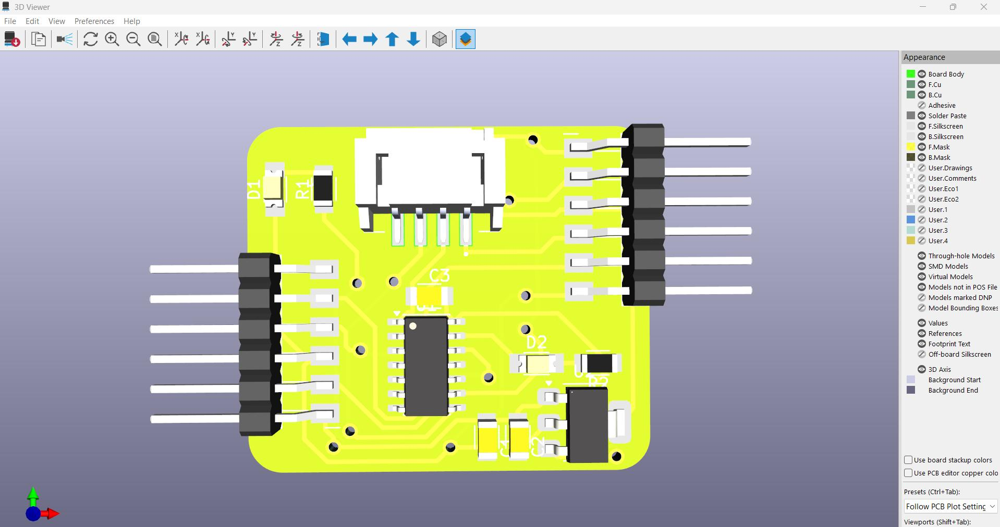
Manufacturing#
(To be filled with process photos and milling parameters after fabrication)
- Milling machine: Roland MDX-20
- Substrate: FR1 single-sided copper clad
- Trace width / clearance: 0.4 mm / 0.4 mm
- Tool: 1/64" flat end mill (traces), 1/32" flat end mill (outline)
- Software: Mods CE
Sensor Board#
Bill of Materials:
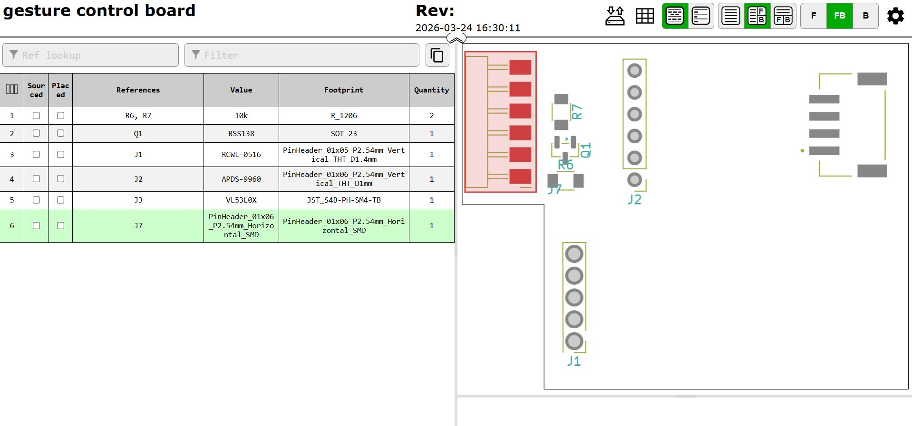
Gerber Visualization:
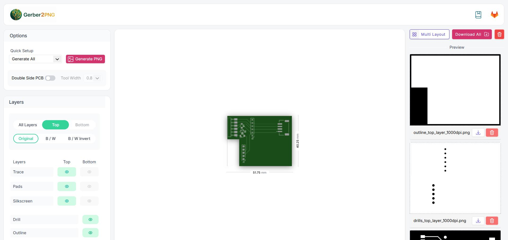
ATtiny1624 Board#
Bill of Materials:
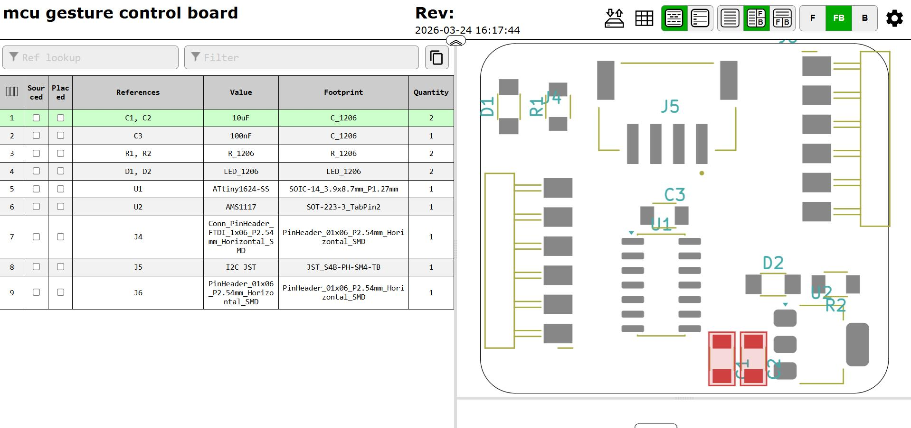
Gerber Visualization:
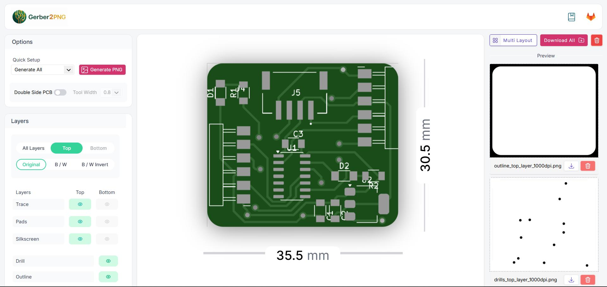
Files#
| File | Description |
|---|---|
sensor-board.kicad_sch |
Sensor board schematic |
sensor-board.kicad_pcb |
Sensor board layout |
attiny1624-board.kicad_sch |
MCU board schematic |
attiny1624-board.kicad_pcb |
MCU board layout |
Reflections#
- The initial STM32 idea was over-engineered for this week’s intent. The constraint of using a minimal MCU like the ATtiny1624 actually makes the sensor interfacing problem more interesting — you have to think about bus loading, I²C pull-ups, voltage domains, and interrupt handling explicitly, rather than having a big SDK paper over them.
- Splitting into two boards keeps the sensor breakout swappable independently of the MCU board — useful if a sensor gets damaged or needs to be replaced.
- The RCWL’s 4 V minimum supply was the main electrical design challenge this week. The level shifter decision came directly from that constraint.